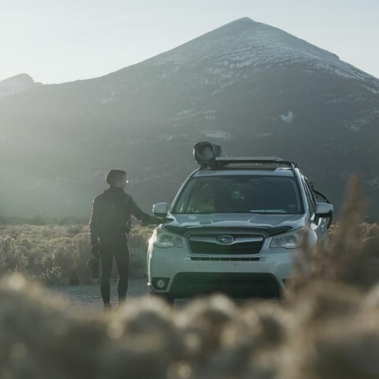
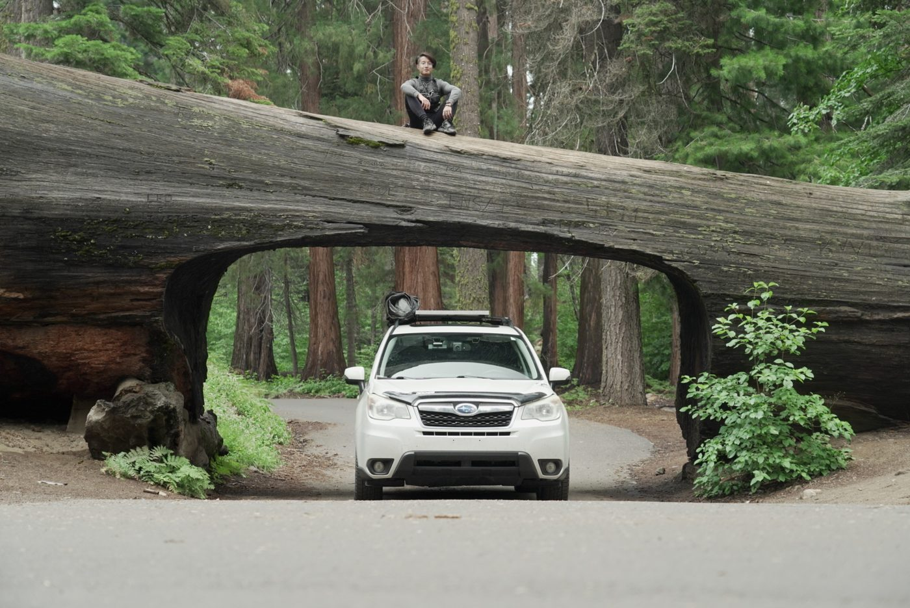
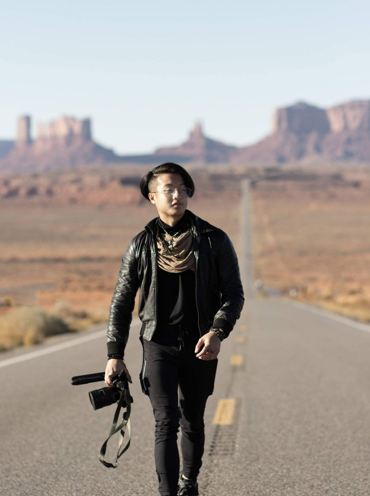
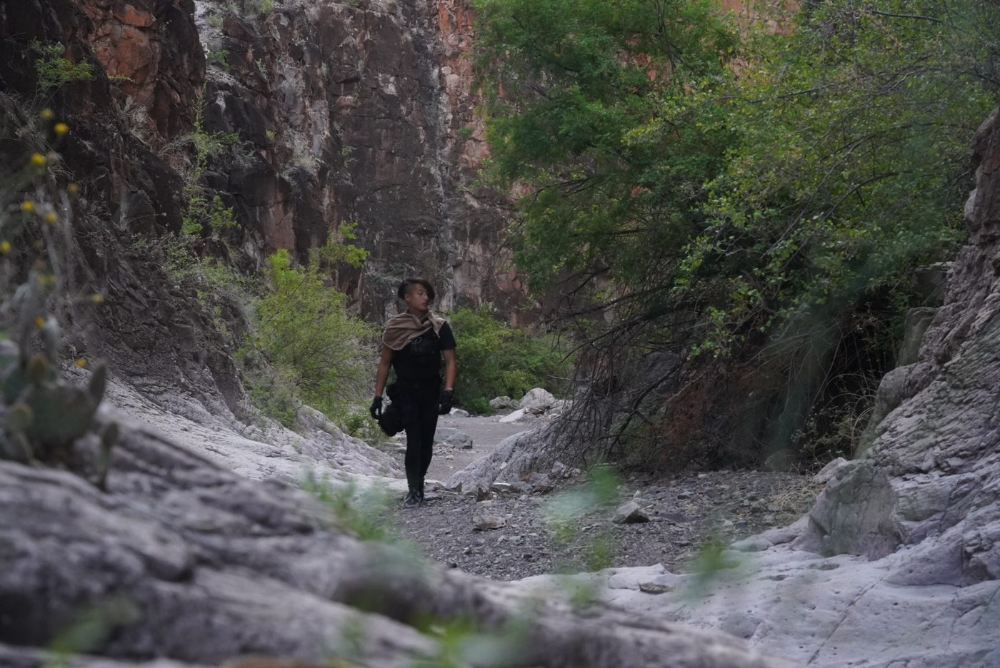
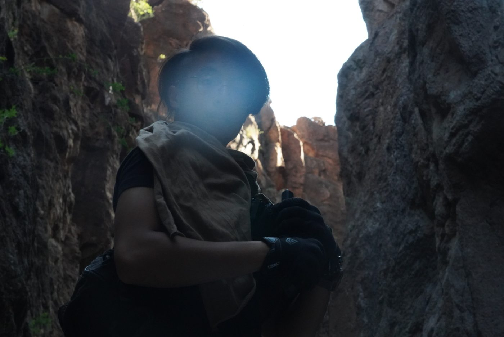
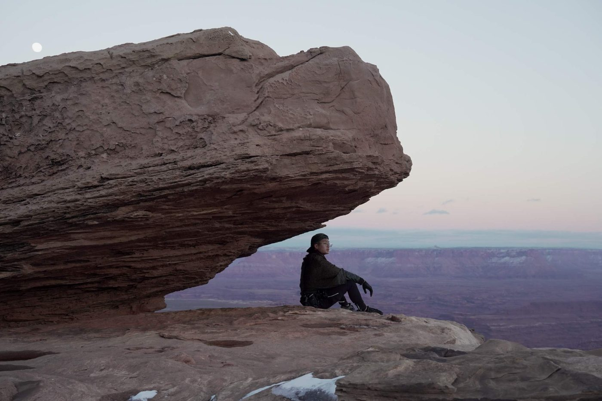
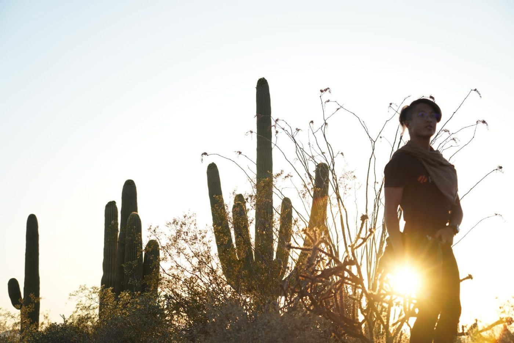
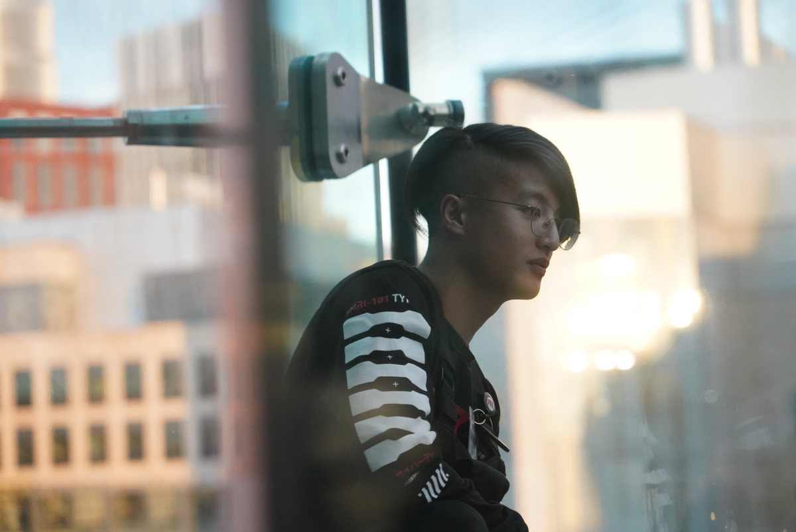

Living out of the rig: road-life security basics
Where you park, what's visible through the windows and who knows your route. The habits that keep a home on wheels from becoming a target, from five years on the road.
Log 001 · Est. 2020
Activate your presence.
RoninSec facilitates awareness on three timelines: the inner work rooted in the past, the field skills you need in the present, and the digital defense the future demands.

The three pillars
A calm nervous system reads a room better. A trained body reacts faster. A clean digital footprint gives an adversary less to work with. Each pillar supports one another.
01 · Past
Practices people have used for centuries to regulate, recover and stay present under pressure.
The instant, in-browser tool for Inner Terrain: reflection and check-ins with nothing to install.
A private, encrypted place to write the story of your life, with your photos placed on the timeline automatically.
A pocket check-in for mood, energy and safety, answered three lines at a time. The lite companion to monogatari.
02 · Present
Physical skills for the situations happening right now, from a tense parking lot to a missing hiker.
A situational-awareness console that runs in any browser, plus a Field Agent phone app with nothing to install.
The desktop edition for Mac, Linux and Windows, adding drone Remote ID scanning, mesh radios and multi-monitor pop-outs.
Public safety data for wherever you are right now, ranked by what matters to you, with what to do about each.
03 · Future
Protecting yourself where most threats now begin, and learning to find what is hidden in public data.
The web edition of the RoninSec security suite: threat intel, defense, assessment and personal OPSEC, running entirely in your browser.
The full RoninSec security console: threat intel, defense, authorized offense and counter-intel in one portable app.
The native Android edition: Bluetooth recon, device hardening audit, network recon and offline IOC tools.
Journal
Sample entries to show the layout. Swap in your own posts as you write them.

Where you park, what's visible through the windows and who knows your route. The habits that keep a home on wheels from becoming a target, from five years on the road.

Partner work trains you to read weight, intention and timing before anyone says a word. The same skill keeps you safe on the street.
Dance with me at RoninRhythm →
How search teams set a starting point, think about lost-person behavior, and why the first hour shapes everything after it.

Location, device and timestamps can ride along with every image you post. Here is how to check and strip them.

Simple breathing and grounding drills that bring your heart rate down so your judgment can come back online.
Distance, exits and posture. The habits that let you avoid most fights before they become physical.

A password manager, two-factor on the accounts that matter, and a check for old breaches. In that order.
The Ronin network
Sibling brands that carry the RoninSec approach into specific passions.
Aerial photo & video · Travel
RoninRecon
Adventure and travel stories told from above and with boots on the ground, aerial photography and videography for people and places worth documenting.
Live Visit RoninReconProjects
Dance instruction · Music production
RoninRhythm
Bachata, Kizomba and Fusion lessons wherever I travel, plus Bachazomba and Kizchata, my own blend of the two, and DJ sets for partner-dance socials. 200+ venues and counting.
Live Visit RoninRhythmProjects
Activism · Advocacy
RoninRxISK
Research efforts, education, and safety practices for people who show up for their communities and the causes they believe in. Now live: psychiatric medication harm and PSSD research, plus the PSSD Atlas evidence map.
Live Visit RoninRxISKProjects

Ethos
Core values
Awareness of the world starts with awareness of yourself.
Skills you practice are the only ones you can count on under stress.
Threats change shape. Your defenses should keep pace.
I'm a nomad with a background in cybersecurity. For more than five years I've lived on the road. Along the way I've traveled across all 50 states and to nearly 30 countries.
RoninSec is where everything I care about meets: Protecting information, people, and the mind — moving gracefully, and documenting the places I pass through, and passing what I learn along the way.
Contact
Questions, collaborations, shoots, security work or classes.
Or email directly: roninsec42@proton.me